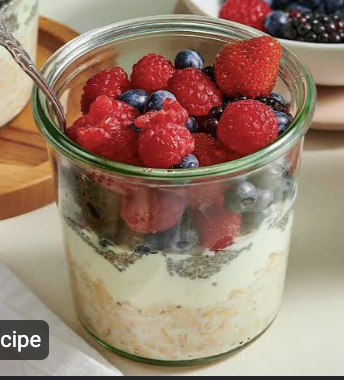

Here are my favorite go-to home recipes!

100g rolled oats 100g whole milk 1 tsp cinnamon 1/4 tsp vanilla extract 4 oz berries
1. Combine all ingredients in a jar. 2. Refrigerate overnight. 3. Serve and enjoy!